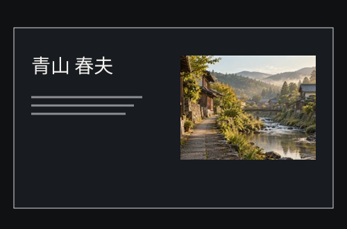
A01 自伝の本オブシディアン・黒と銀実物を開く →
人生の履歴書 — 男性用・女性用の見本帳
男性用10デザイン×専用10配色。女性用10デザイン×専用10配色。各100通りを、種類ごとにお選びいただけます。
男性用：10案を表示

A01 自伝の本オブシディアン・黒と銀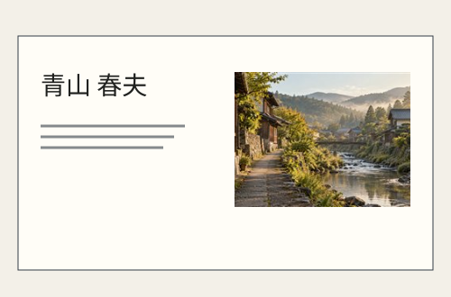
A01 自伝の本新聞紙・アイボリーと墨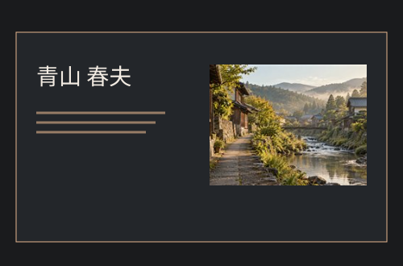
A01 自伝の本グラファイトと銅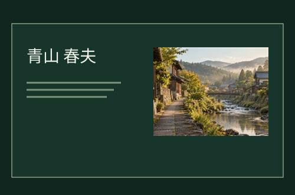
A01 自伝の本深い森とオリーブ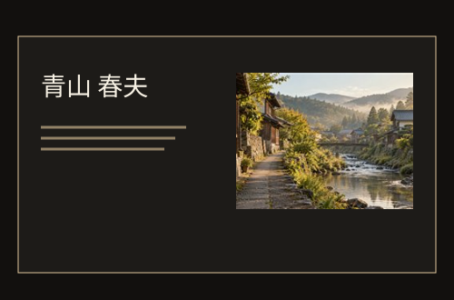
A01 自伝の本漆黒とシャンパンゴールド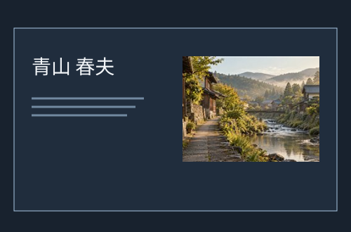
A01 自伝の本ミッドナイト・濃紺と鋼青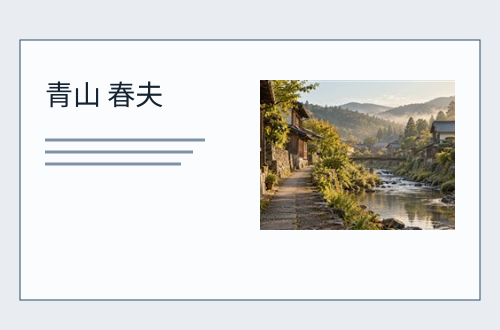
A01 自伝の本シルバーグレーとネイビー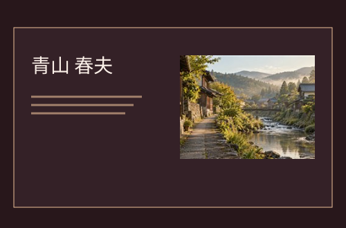
A01 自伝の本深いワインとブロンズ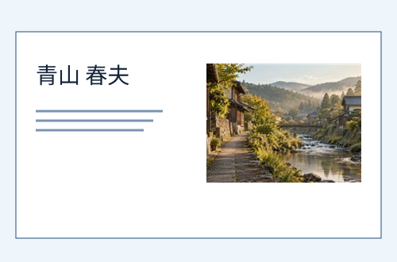
A01 自伝の本薄いブルーと紺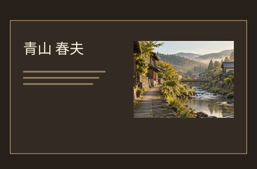
A01 自伝の本エスプレッソと琥珀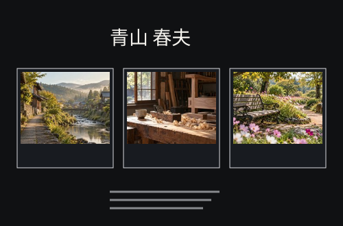
A02 歩みの年表オブシディアン・黒と銀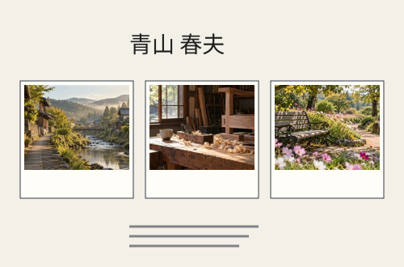
A02 歩みの年表新聞紙・アイボリーと墨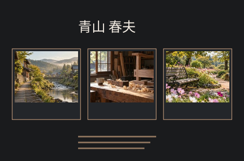
A02 歩みの年表グラファイトと銅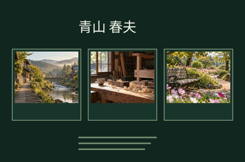
A02 歩みの年表深い森とオリーブ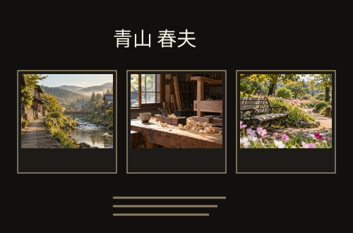
A02 歩みの年表漆黒とシャンパンゴールド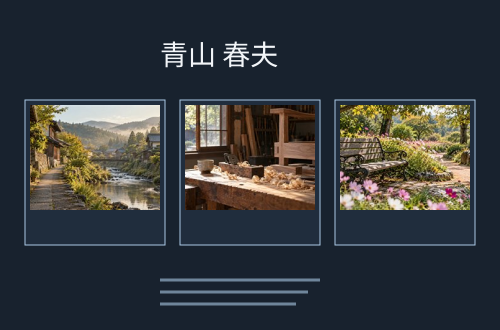
A02 歩みの年表ミッドナイト・濃紺と鋼青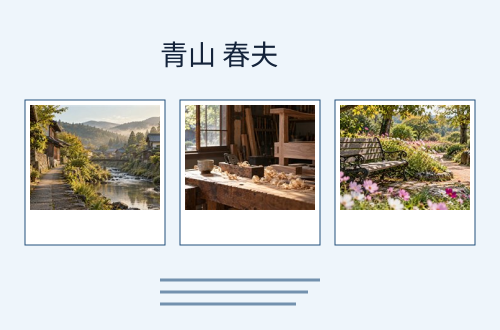
A02 歩みの年表薄いブルーと紺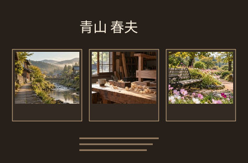
A02 歩みの年表エスプレッソと琥珀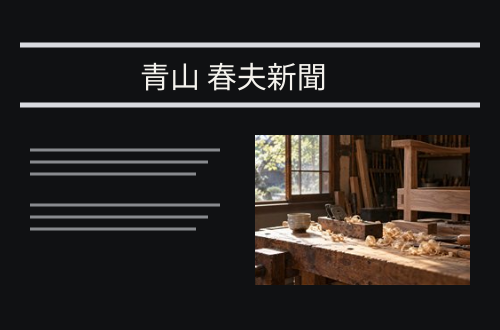
A03 昭和の新聞オブシディアン・黒と銀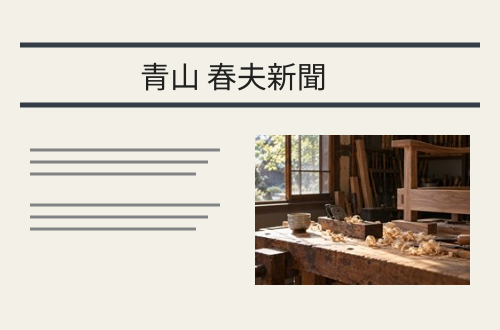
A03 昭和の新聞新聞紙・アイボリーと墨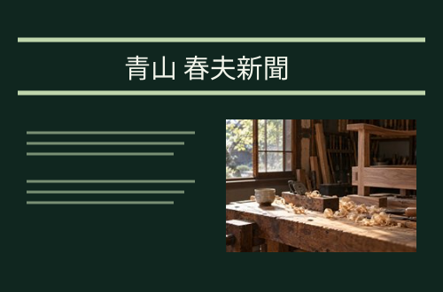
A03 昭和の新聞深い森とオリーブ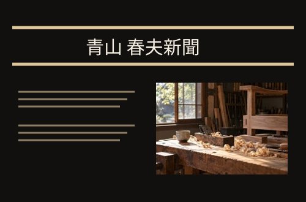
A03 昭和の新聞漆黒とシャンパンゴールド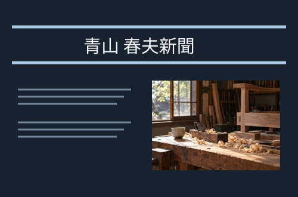
A03 昭和の新聞ミッドナイト・濃紺と鋼青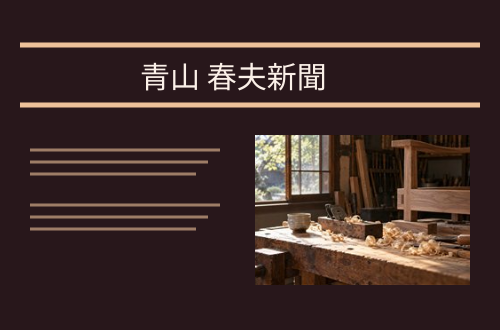
A03 昭和の新聞深いワインとブロンズ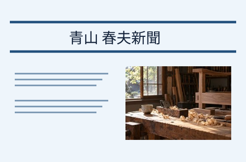
A03 昭和の新聞薄いブルーと紺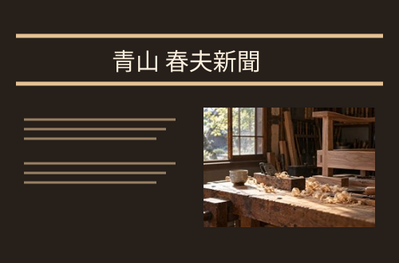
A03 昭和の新聞エスプレッソと琥珀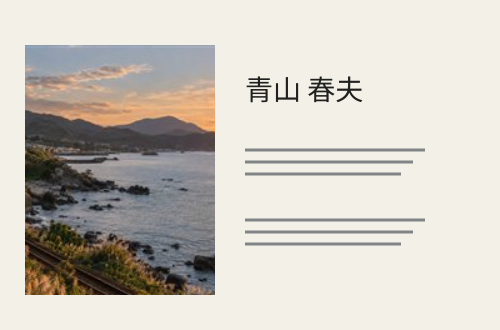
A04 旅の記録新聞紙・アイボリーと墨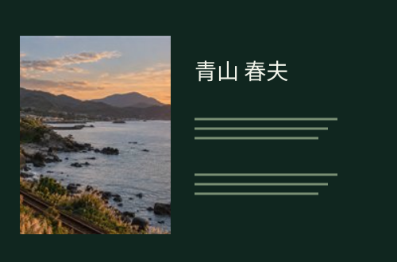
A04 旅の記録深い森とオリーブ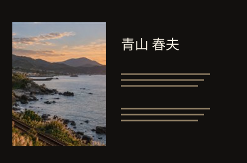
A04 旅の記録漆黒とシャンパンゴールド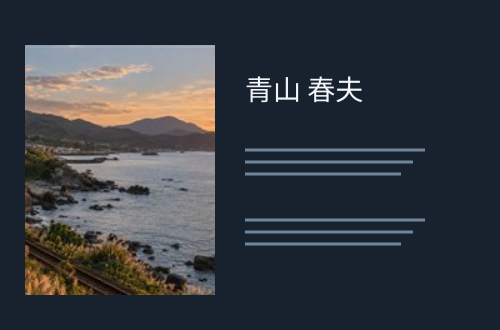
A04 旅の記録ミッドナイト・濃紺と鋼青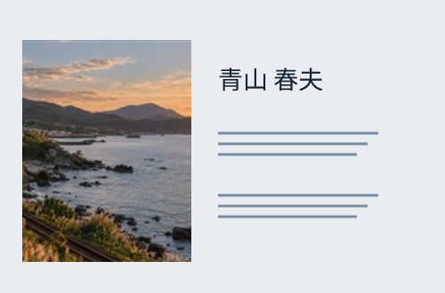
A04 旅の記録シルバーグレーとネイビー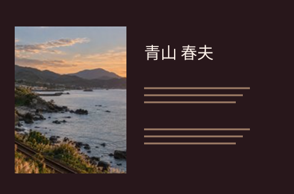
A04 旅の記録深いワインとブロンズ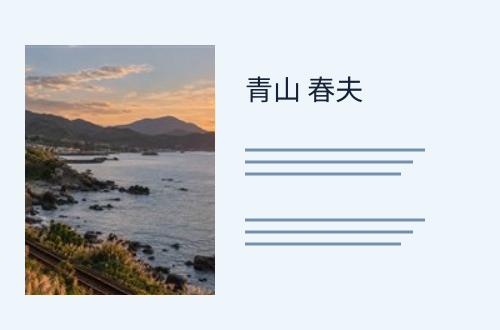
A04 旅の記録薄いブルーと紺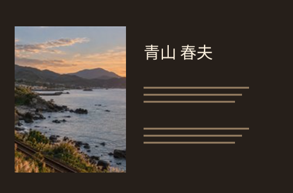
A04 旅の記録エスプレッソと琥珀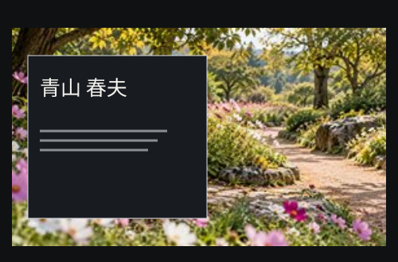
A05 自然とともにオブシディアン・黒と銀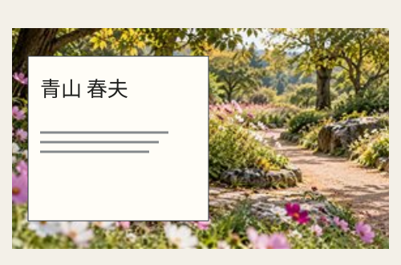
A05 自然とともに新聞紙・アイボリーと墨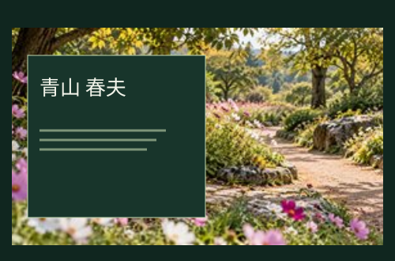
A05 自然とともに深い森とオリーブ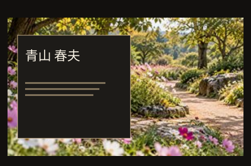
A05 自然とともに漆黒とシャンパンゴールド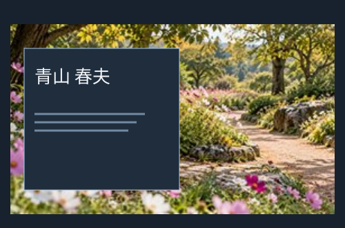
A05 自然とともにミッドナイト・濃紺と鋼青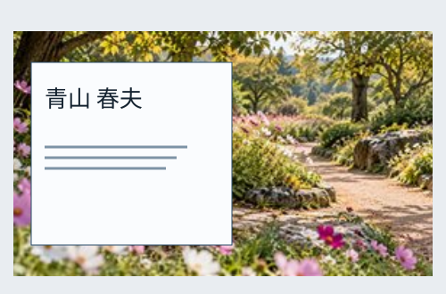
A05 自然とともにシルバーグレーとネイビー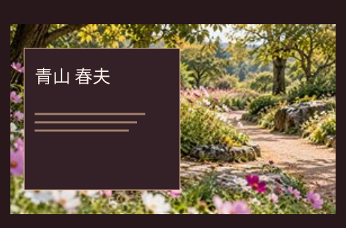
A05 自然とともに深いワインとブロンズ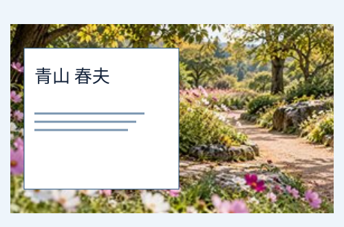
A05 自然とともに薄いブルーと紺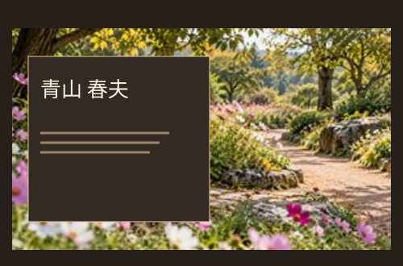
A05 自然とともにエスプレッソと琥珀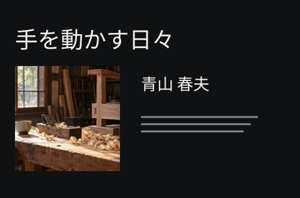
A06 仕事の誇りオブシディアン・黒と銀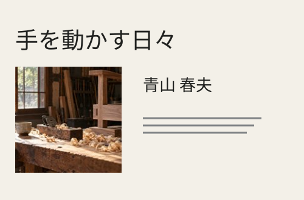
A06 仕事の誇り新聞紙・アイボリーと墨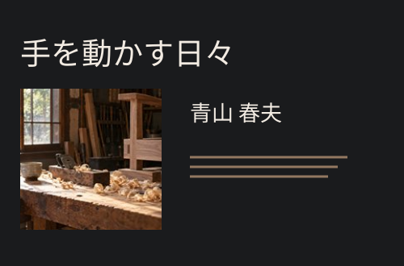
A06 仕事の誇りグラファイトと銅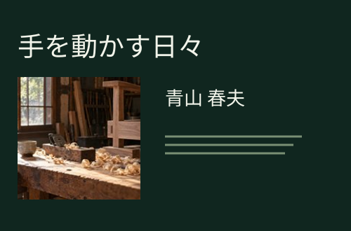
A06 仕事の誇り深い森とオリーブ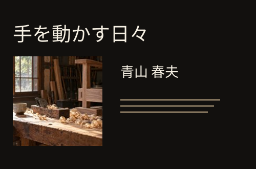
A06 仕事の誇り漆黒とシャンパンゴールド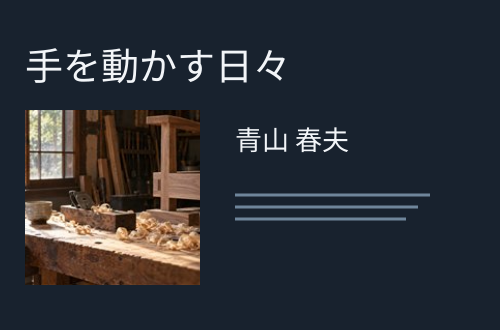
A06 仕事の誇りミッドナイト・濃紺と鋼青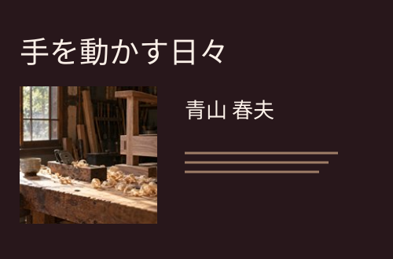
A06 仕事の誇り深いワインとブロンズ A09 現代の自伝オブシディアン・黒と銀
A09 現代の自伝オブシディアン・黒と銀 A09 現代の自伝新聞紙・アイボリーと墨
A09 現代の自伝新聞紙・アイボリーと墨 A09 現代の自伝グラファイトと銅
A09 現代の自伝グラファイトと銅 A09 現代の自伝深い森とオリーブ
A09 現代の自伝深い森とオリーブ A09 現代の自伝漆黒とシャンパンゴールド
A09 現代の自伝漆黒とシャンパンゴールド A09 現代の自伝ミッドナイト・濃紺と鋼青
A09 現代の自伝ミッドナイト・濃紺と鋼青 A09 現代の自伝シルバーグレーとネイビー
A09 現代の自伝シルバーグレーとネイビー A09 現代の自伝深いワインとブロンズ
A09 現代の自伝深いワインとブロンズ A09 現代の自伝薄いブルーと紺
A09 現代の自伝薄いブルーと紺 A09 現代の自伝エスプレッソと琥珀
A09 現代の自伝エスプレッソと琥珀 A10 上質な回想録オブシディアン・黒と銀
A10 上質な回想録オブシディアン・黒と銀 A10 上質な回想録新聞紙・アイボリーと墨
A10 上質な回想録新聞紙・アイボリーと墨 A10 上質な回想録グラファイトと銅
A10 上質な回想録グラファイトと銅 A10 上質な回想録深い森とオリーブ
A10 上質な回想録深い森とオリーブ A10 上質な回想録漆黒とシャンパンゴールド
A10 上質な回想録漆黒とシャンパンゴールド A10 上質な回想録ミッドナイト・濃紺と鋼青
A10 上質な回想録ミッドナイト・濃紺と鋼青 A10 上質な回想録シルバーグレーとネイビー
A10 上質な回想録シルバーグレーとネイビー A10 上質な回想録深いワインとブロンズ
A10 上質な回想録深いワインとブロンズ A10 上質な回想録薄いブルーと紺
A10 上質な回想録薄いブルーと紺 A10 上質な回想録エスプレッソと琥珀
A10 上質な回想録エスプレッソと琥珀